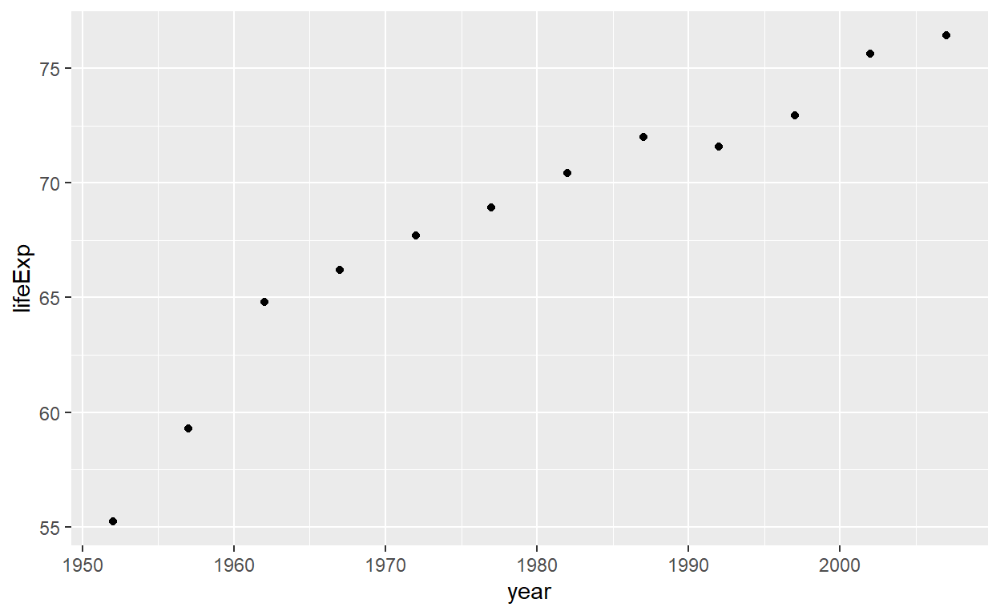

Ice Breaker
Jeopardy
NOTE: If you’re taking this tutorial on your own you’re welcome to press Continue* below to skip this warm-up.
Before we get started let’s play a game to warm up for the day! A game of Jeopardy. Don’t worry about the reverse question answering style of the game. Answers are just fine!
#Goals
My goals is that by the end of this webinar tutorial you will be able to quickly generate information-packed graphs like the one below with only 2 lines of code.
gapminder_2007 <- filter(gapminder,year==2007)
ggplot(gapminder_2007,mapping = aes(x=gdpPercap,y=lifeExp,color = continent,size = pop)) + geom_point(alpha = 0.7)The Basic ingRedients
Getting Started
For this tutorial we are going to imagine we are all new chefs in a fancy kitchen and we will be making a special dinner. To start “cooking” up code in R you’ll need to know basic skills and ingredients you might find in a kitchen.
Write the R code required to add two plus two.
When you want to see what the code does hit the Run button.
If you get stuck hit the Hint button. Sometimes there may be multiple Hints.
Finally, when you’re ready to submit your answer press Submit Answer.
22 +2 + 2Subtraction
See how R performs other basic arithmetic. Try subtraction now. Perform two minus two.
Remember When you want to see what the code does hit the Run button.
If you get stuck hit the Hint button. Sometimes there may be multiple Hints.
Finally, when you’re ready to submit your answer press Submit Answer.
22 -2 - 2Multiplication
How do you think we would do multiplication? Try to multiply 5 by 5.
#Write the multiplication expression below55 *5 * 5More operations
Here are a couple more expressions you can use in R. Try to run the code!
# Division expression
5 / 2 More operations
And this last operation handles exponentiation. Try to run the code!
# Exponentiation expression
2^5Making comments
See how comments affect the code. Using the “#” symbol at the beginning of a line prevents the code from being Run. In other words, R does not process this code. Click Run to see what happens when we put a # before the division operation below.
#Run the division operation below with the "#" in front
# 5 / 2 Test Your Knowledge
Why comments
So, we understand that “#” means the code won’t be calculated. While the operation is not performed, we are effectively making a “comment” for ourselves. Commenting is how you take notes and give yourself a cue as to what the code’s purpose is. Click Run to confirm that the answer we chose in the previous question was correct.
#Run the code below. Adding a "#" at the beginning of a line prevents code from being run.
#(5+4)/3*4-2Variables
Now you will learn how to do variable assignment with the “<-” symbols. Assigning a number to a variable means this is a “numeric variable”.
# Assign the value 37 to x
x <- x <- 37Adding variables
Let’s try adding variables together! What if I wanted to count the number of cats and dogs that I have at home? Set cats to two and dogs to three.
# Assign the values above to the variables cats and dogs
cats <-
dogs <-
# Add these two variables together
pets <-
# Below, type out the new variable you just created.# Assign a value to the variables cats and dogs
cats <- 2
dogs <- 3
# Add these two variables together
pets <-
# Below, type out the new variable you just created.# Assign a value to the variables cats and dogs
cats <- 2
dogs <- 3
# Add these two variables together
pets <- cats + dogs
# Below, type out the new variable you just created.# Assign a value to the variables cats and dogs
cats <- 2
dogs <- 3
# Add these two variables together
pets <- cats + dogs
# Below, type out the new variable you just created.
petsText variables
What else is a variable? Assigning a text string to a variable makes the variable a “character variable”. Assign the phrase in quotation marks to the variable text, then underneath you need to type out text to display the value stored there. Once complete Run and then Submit your code.
# Assign a "string" of words to a variable
text <- "I have two cats one named Meeju and the other Daffne"
# Type "text" below so R displays the variable value you just stored# Assign a "string" of words to a variable
text <- "I have two cats one named Meeju and the other Daffne"
# Type "text" below so R displays the variable value you just stored
textNomencature
Let’s do some naming. I will start referring to the code block where you type out your code as the script*. When you select Run you feed the script to the console.
# This code chunk here is called a "script".
# When you select Run, you feed the script to the "console"
"The console reads the script and gives you results"Test Your Knowledge
R-ecipes: Vectors and Functions:
Vectors!
Now that we know our way around the kitchen and a couple ingredients, let’s learn some basic recipes and some methods of cooking in R.
“Vectors” are a type of variable that holds a series of values. Like a shopping list or a receipt. You will be using a new “function” that looks like this c(). Values are separated by commas in the c() function. Assign any series of value to the variable - you can pick any numbers you want. Make sure to put a comma between the numbers though!
#Assign a series of values to the my_receipt variable.
my_receipt <- c()
#Tell the console to display values stored in the new variable your created by typing the variable name below#Assign a series of values to the my_receipt variable
my_receipt <- c(14,2,5,5,35,20,10,1)
#Tell the console to display values stored in the new variable your created by typing the variable name below#Assign a series of values to the my_receipt variable
my_receipt <- c(14,2,5,5,35,20,10,1)
#Tell the console to display values stored in the new variable your created by typing the variable name below
my_receiptMore Vectors
Vectors can also be a series of texts values not just numbers. Remember you need to use " " with text. Below, a series of fruits are assigned to the my_list variable. All of you to do is type out the name of the variable where applicable.
#Assign a series of texts to the my_list variable, which will also be a vector
my_list <- c("apples", "bananas","eggplant","tofu", "pasta")
#Type out the name of the variable to see your valuesVector Selection
You can use [] to select which element or value you want from each vector. Run the code below to see how this works.
#Assign a series of texts to the my_list variable, which will also be a vector
my_list <- c("apples", "bananas","eggplant","tofu", "pasta")
#Now select the third element or object from the my_list vector
my_list[3]Test Your Knowledge
Vector functions
You can use apply functions to your vectors and variables. There is another functionmean() that calculates the average value of a vector. All you have to do is “wrap” your variable name in the mean() function as you see below. Press Run to complete the calculation.
#Let's make a vector of a grocery shopping list
my_vector <- c(14, 5, 2, 12, 24, 100, 3, 400, 14, 14, 2, 20)
# Wrap the variable name in mean() to find the average value.
mean(my_vector)More Functions
There are countless functions to call, so try some! Just type out the name of a function seen below and put the variable name inside the parentheses.#Let's use another shopping list vector again
my_vector <- c(14, 5, 2, 12, 24, 100, 3, 400, 14, 14, 2, 20)
# Try out other functions like median(), min(), max(), sd(), sort(), sum(), unique().#Let's use another shopping list vector again
my_vector <- c(14, 5, 2, 12, 24, 100, 3, 400, 14, 14, 2, 20)
# Try out other functions like median(), min(), max(), sd(), sort(), sum(), unique().
median(my_vector)Saving the Result
We can also save the result of the function to another variable. Try saving the result of themean() function for my_vector to yet another variable named new_val. Once complete, Run and then Submit your code.
#Let's use another shopping list vector again
my_vector <- c(14, 5, 2, 12, 24, 100, 3, 400, 14, 14, 2, 20)
#Now save the mean of the vector to a new variable
new_val <- mean()#Let's use another shopping list vector again
my_vector <- c(14, 5, 2, 12, 24, 100, 3, 400, 14, 14, 2, 20)
#Now save the mean of the vector to a new variable
new_val <- mean(my_vector)Making Dinner: Data Tables
Dataframes
You are doing so well! You’ve learned all the basics of how to cook. But now we need to actually gather the ingredients and build the recipe for the main course. The main recipe is our data table.
A dataframe is what we call our data tables in R, like an excel table. Below type out the variable namestarwars to display the A Star Wars related dataset. starwars is preloaded into our session and accessible for our use. Don’t forget to hit Run
#Type out starwars to display the R dataframe known as starwars
starwarsUnderstanding your Data
It’s useful to investigate our dataframe to understand it better. There are a number of functions to help us out. Let’s start with the head() function. Once complete, Run and then Submit your code. What do you think this function does?#Apply the head() function to the dataframe like you would any other function and variable.
head()#Apply the head() function to the dataframe like you would any other function and variable.
head(starwars)More Understanding
We can also use another important function, glimpse(), to give us a general idea of what is stored in our dataframe. Wrap the starwars variable in the glimpse() function. Try it out below!
#Apply the glimpse() function to the dataframe like you would any other variable.
glimpse()Summary Function
Now let’s try thesummary() function too. Wrap starwars in the summary() function. Once complete, Run and then Submit your code.
#Apply the summary() function to the dataframe.#Apply the head() function to the dataframe like you would any other function and variable.
summary(starwars)Test Your Knowledge
## Rows: 87
## Columns: 14
## $ name <chr> "Luke Skywalker", "C-3PO", "R2-D2", "Darth Vader", "Leia Or~
## $ height <int> 172, 167, 96, 202, 150, 178, 165, 97, 183, 182, 188, 180, 2~
## $ mass <dbl> 77.0, 75.0, 32.0, 136.0, 49.0, 120.0, 75.0, 32.0, 84.0, 77.~
## $ hair_color <chr> "blond", NA, NA, "none", "brown", "brown, grey", "brown", N~
## $ skin_color <chr> "fair", "gold", "white, blue", "white", "light", "light", "~
## $ eye_color <chr> "blue", "yellow", "red", "yellow", "brown", "blue", "blue",~
## $ birth_year <dbl> 19.0, 112.0, 33.0, 41.9, 19.0, 52.0, 47.0, NA, 24.0, 57.0, ~
## $ sex <chr> "male", "none", "none", "male", "female", "male", "female",~
## $ gender <chr> "masculine", "masculine", "masculine", "masculine", "femini~
## $ homeworld <chr> "Tatooine", "Tatooine", "Naboo", "Tatooine", "Alderaan", "T~
## $ species <chr> "Human", "Droid", "Droid", "Human", "Human", "Human", "Huma~
## $ films <list> <"The Empire Strikes Back", "Revenge of the Sith", "Return~
## $ vehicles <list> <"Snowspeeder", "Imperial Speeder Bike">, <>, <>, <>, "Imp~
## $ starships <list> <"X-wing", "Imperial shuttle">, <>, <>, "TIE Advanced x1",~RefreshR
We covered a lot so far so let’s take a step back to catch our breath and refresh our knowledge.
Scattergories
NOTE: If you’re taking this tutorial on your own you’re welcome to press Continue* below to skip this warm-up.
Before we review, let’s play a game to warm up for the day! A game that me and my friends like to play is called Scattergories. It’s simple and fun.
- Everyone get out a pencil and paper or just take notes on a word document.
- Make a list from 1 to 6 on the paper
- You will be given 6 categories after I press the start button
- You have 1 minute think of a word or phrase for each category that STARTS with the big letter shown BUT the catch is that you only get points if no one else thought of that word!
- At the end we will score our cards. Whoever has the most points at the end wins!
Refresher
Let’s review what we’ve learned so far.
Question 1
Question 2
Question 3
Question 4
Question 5
## Rows: 1,704
## Columns: 6
## $ country <fct> "Afghanistan", "Afghanistan", "Afghanistan", "Afghanistan", ~
## $ continent <fct> Asia, Asia, Asia, Asia, Asia, Asia, Asia, Asia, Asia, Asia, ~
## $ year <int> 1952, 1957, 1962, 1967, 1972, 1977, 1982, 1987, 1992, 1997, ~
## $ lifeExp <dbl> 28.801, 30.332, 31.997, 34.020, 36.088, 38.438, 39.854, 40.8~
## $ pop <int> 8425333, 9240934, 10267083, 11537966, 13079460, 14880372, 12~
## $ gdpPercap <dbl> 779.4453, 820.8530, 853.1007, 836.1971, 739.9811, 786.1134, ~Prep the Recipe: Manipulating Data
Starwars Dataframe
We’ve gathered the ingredients, made sure the food looked good, and examined how it all fits together. Now we can actually start dicing, spicing, and sauteing.
In other words let’s try “manipulating” the data. Back to starwars! Type the name of the dataframestarwars below and hit Run to display it.
#Access the built-in starwars dataset by typing starwars#Access the built-in starwars dataset by typing starwars
starwarsLeveling Up
We are going to need new functions to help us manipulate our data. To do this you will need to download a package, in order to Upgrade R. Hit Run to process this code to install and deploy the tidyverse.
Note: When you hit Run you’ll see the following message Warning: package 'tidyverse' is in use and will not be installed. This is fine - tidyverse is already loaded in our session. I just want you to see how you install and load new packages if you need to do it on your own.
#The code below will download the "tidyverse" package from the internet
install.packages("tidyverse")
#Now we need to "load" the package. Type tidyverse into the library function
library(tidyverse)New Functions
Now that R is leveled up we can use new functions like select(), filter(), arrange(), and mutate(). Let’s try out select().
Selecting
select() takes the following format select(dataframe,column name, column name, column name, etc).
What do you think?
## Rows: 87
## Columns: 14
## $ name <chr> "Luke Skywalker", "C-3PO", "R2-D2", "Darth Vader", "Leia Or~
## $ height <int> 172, 167, 96, 202, 150, 178, 165, 97, 183, 182, 188, 180, 2~
## $ mass <dbl> 77.0, 75.0, 32.0, 136.0, 49.0, 120.0, 75.0, 32.0, 84.0, 77.~
## $ hair_color <chr> "blond", NA, NA, "none", "brown", "brown, grey", "brown", N~
## $ skin_color <chr> "fair", "gold", "white, blue", "white", "light", "light", "~
## $ eye_color <chr> "blue", "yellow", "red", "yellow", "brown", "blue", "blue",~
## $ birth_year <dbl> 19.0, 112.0, 33.0, 41.9, 19.0, 52.0, 47.0, NA, 24.0, 57.0, ~
## $ sex <chr> "male", "none", "none", "male", "female", "male", "female",~
## $ gender <chr> "masculine", "masculine", "masculine", "masculine", "femini~
## $ homeworld <chr> "Tatooine", "Tatooine", "Naboo", "Tatooine", "Alderaan", "T~
## $ species <chr> "Human", "Droid", "Droid", "Human", "Human", "Human", "Huma~
## $ films <list> <"The Empire Strikes Back", "Revenge of the Sith", "Return~
## $ vehicles <list> <"Snowspeeder", "Imperial Speeder Bike">, <>, <>, <>, "Imp~
## $ starships <list> <"X-wing", "Imperial shuttle">, <>, <>, "TIE Advanced x1",~Select Starwars
Great! Now we can select columns from the starwars dataset. Let’s select a couple columns to make it interesting. Hit Run to apply theselect() function as seen below.
# Select name, height, homeworld, and species
select(starwars,name, height,homeworld,species)Nested Selecting
Can we put a function within a function? Why yes! In the code below wrap the select() function with the head() function. In functional terms, use head() to find the first 6 rows of the selected starwars columns. Once complete, Run and then Submit your code.
If you get stuck hit the Solution button.
#Try to wrap this whole function in the head() function.
select(starwars,name, height,homeworld,species)#Try to wrap this whole function in the head() function.
head(select(starwars,name, height,homeworld,species))Filtering
Sometimes we only want very specific data so we will need to filter it, just like in an excel filter. filter() takes the folllowing format. filter(dataset, column_name [filtering_condition])
Take note of the code below. See how we created a new variable starwars_head and fed that into the filter. In sum, this code script will filter the first 6 rows of the starwars so that only characters whose homeworld is Tatooine will be shown. Notice how we have to use == instead of = when doing a filtering condition inside of filter().
Press Run to see the result of the filter() function on starwars_head.
#Let's create a new variable to save the "head" of starwars
starwars_head <- head(select(starwars,name, height,homeworld,species))
#Now apply the filter verb so that we only look at characters whose homeworld is Tatooine
filter(starwars_head, homeworld == "Tatooine")Test your Understanding
Answer
Let’s try out that solution now and compare it to starwars_head. Below you first savestarwars_head, second you will name starwars_head so that it displays to the console, and then lastly you will apply the filter() as seen in the answer above to get the filtered dataset.
#Save starwars_head again below so you can compare it to the filtered dataset next
starwars_head <- head(select(starwars,name, height,homeworld,species))
#Type out starwars_head so that the saved value is now "printed" or displayed in the console
starwars_head
#Now apply the filter verb so that we only look at characters whose species is Droid
filter(starwars_head,species == "Droid")More Filtering
Filtering is very flexible. Let’s see how we can filter height for characters below 100. I’m showing you starwars_head automatically so it is easier to figure out the correct code.
In the script below you need to figure out how to filter() starwars_head so the dataframe is limited to characters whose height is less than 100. Don’t forget you can use Hints if you get stuck.
#Save starwars_head again below so you can apply the filter()
starwars_head <- head(select(starwars,name, height,homeworld,species))
#Now apply the filter verb so that height is less than 100#Save starwars_head again below so you can apply the filter()
starwars_head <- head(select(starwars,name, height,homeworld,species))
#Now apply the filter verb so that height is less than 100
filter(starwars_head,)#Save starwars_head again below so you can apply the filter()
starwars_head <- head(select(starwars,name, height,homeworld,species))
#Now apply the filter verb so that height is less than 100
filter(starwars_head, height < ) #Save starwars_head again below so you can apply the filter()
starwars_head <- head(select(starwars,name, height,homeworld,species))
#Now apply the filter verb so that height is less than 100
filter(starwars_head, height < 100)Test your Understanding
Answer
Let’s try out that solution.#Apply the two filters to starwars_head
filter(starwars_head,species == "Human", height > 200)Arrange
We can also use the function arrange to sort data within a column. Arrange take the following format.
arrange(dataset, column name)
I’ve pre-stored starwars_head below so you can just type starwars_head access this dataframe. Hit Run to see how arrange works.
#Apply the function arrange to the height column
arrange(starwars_head)Descending
The desc() function reverses the order of arrange. Try wrapping height in the desc() function so arrange() gets the cue to reverse the order.
#Apply the desc() function to our arrange code.
arrange()#Apply the desc() function to our arrange code
arrange(starwars_head,height)#Apply the desc() function to our arrange code
arrange(starwars_head,(height))#Apply the desc() function to our arrange code
arrange(starwars_head,desc(height))Mutate
Yet another critical function is mutate(). This function allows you to modify existing columns, calculate new columns, and more.
Mutate takes the following format: mutate(dataset,new or existing column name = some calculation)
starwars_head dataframe.
#Use mutate() to calculate a new column called height_inch. Hint: there are 2.54 cm in an inch
mutate(starwars_head,height_inch = height / 2.54)More Mutations
We can also use mutate to modify existing columns rather than make new columns. How could we use mutate to change starwars_head so that height is simply expressed in inches in the “height” column without making a new column?
Remember, Mutate takes the following format: mutate(dataset,new or existing column name = some calculation) and that there are 2.54 cms in an inch. So, set height equal to the some calculation portion of your code.
#Use mutate() to re-calculate the height column.#Use mutate() to re-calculate the height column.
mutate()#Use mutate() to re-calculate the height column.
mutate(starwars_head,height = )#Use mutate() to re-calculate the height column.
mutate(starwars_head,height = height / 2.54)Aggregating Data
Briefly, we will explore how to summarize and aggregate our data to make it easier to intepret(and graph!). Now let’s try to see how many of each species type there are by using the count() function. Count takes the following format: count(dataset,column name)
Below, apply the count() function to the original starwars dataframe to count how many species types there are. Hit the Run button to process the script. How many species types do you count?
#Apply the count function to the original starwars dataframe
count(starwars,species)More Counting
Count takes a special “argument” called “sort”. An argument is code that modifies a function. So just place a comma after species and write sort=TRUE like so:
count(dataset,column name, sort = TRUE)
sort is an argument of the count() function. Below you will need to run count() again on species and then set the sort argument to TRUE. Don’t forget you can use Hints if you get stuck. Once complete Run and then Submit your code.
#Apply the count function again but with Sort = TRUE #Apply the count function again but with Sort = TRUE
count(starwars,species)#Apply the count function again but with Sort = TRUE
count(starwars,species,sort = )#Apply the count function again but with Sort = TRUE
count(starwars,species,sort = TRUE)Now you try
What code do we need to count how many starwars characters are from each homeworld and have the order sorted from most to least frequent?
Don’t forget you can use Hints if you get stuck. Once complete Run and then Submit your code. You’ll need the correct answer to solve the question after this exercise.#Count the number of homeworlds in starwars and sort it#Count the number of homeworlds in starwars and sort it
count()#Apply the count function again but with Sort = TRUE
count(starwars,homeworld,sort = )#Apply the count function again but with Sort = TRUE
count(starwars,homeworld,sort = TRUE)Planet Problem
Summarizing data
Another crucial aggegating function is summarize. In this exercise, we will attempt to find the minimum height of the starwars dataframe.
summarize() takes the following format: summarize(dataframe, function(existing column).
summarize() to find the minimum height of the starwars dataframe. Once complete Run and then Submit your code. The result may surprise you.
#Use the summarize() and min() function to gives us the minimum height of the starwars characters#Use the summarize() and min() function to gives us the minimum height of the starwars characters
summarize()#Use the summarize() and min() function to gives us the minimum height of the starwars characters
summarize(starwars,min())#Use the summarize() and min() function to gives us the minimum height of the starwars characters
summarize(starwars,min(height))NA issue
Yep that’s right, you were suppose to get “NA” as an answer. I suspect that we cannot find the minimum height of the height variable because one or multiple characters have an undefined height. In other words some characters have their height listed as “NA”.
Let’s double check that. We can either go through the entire starwars dataframe to look for NA as height or we can do a shortcut. Run the following script to see all entries for height. Observe how $ is used access the height variable from starwars. Do you see any NAs?
#See all entries for height
starwars$heightDropping NA’s
Yes there were 6 NAs, which is why the minimum could not be calculated. Let’s see if we tell minimum to disregard NAs.
The min() function has a special argument called na.rm which means remove NAs. So this time let’s try the summarize() function again to find the minimum height, but this time set na.rm to TRUE inside of min() like so:
min(height,na.rm=TRUE)
summarize() takes the following format: summarize(dataframe, function(existing column).
#Now try the summarize() function again but this time remove the NAs from height.#Now try the summarize() function again but this time remove the NAs from height.
summarize()#Now try the summarize() function again but this time remove the NAs from height.
summarize(starwars,min(height))#Now try the summarize() function again but this time remove the NAs from height.
summarize(starwars,min(height,na.rm = TRUE))More Summarizing
Now that we know how to eliminate NA’s let’s find the maximum height of the starwars characters. Run the code below and then solve the question related to it. Use themax() function inside summarize() to find the *maximum height**
#Use max() to find the max height of starwarsStarwars Trivia
And now just for fun, answer the following off the top of your head:
The smallest starwars character is(66cm)?
The tallest starwars character is(264cm)?
Trivia Answers
Smallest - Yoda (66 cm)
Tallest - Yarael Poof (264 cm)


Renaming Columns
You can use the rename() function to rename columns in your dataframe. Rename takes the following format:
rename(dataframe,column new name = column old name)
#Apply the rename() function to starwars and change height to height_cm#Apply the rename() function to starwars and change height to height_cm
rename(starwars)#Apply the rename() function to starwars and change height to height_cm
rename(starwars,height_cm)#Apply the rename() function to starwars and change height to height_cm
rename(starwars,height_cm = height)Checkpoint: Special Code
Congratulations! You’re all caught up with the rest of the class now.
You have unlocked the special code: Katherine Johnson
You can stop the tutorial and take the remainder of the course in-person. Please send an email with the subject line Katherine Johnson to me, Zach Margulies, by clicking here. This will confirm to me that you are all caught up. You’re welcome to continue if you wish, but we will cover the rest in person.
It’s all about pResentation: Graphing
Just the basics
You finished cooking and it smells amazing. The work is not done though, you still have to plate the food and make sure it looks presentable.
R can quickly and easily produce publication quality graphs. There are a lot of ways to tweak graphs but let’s just keep it simple for now.
In the script below we will apply the head() function to a dataset known as gapminder that I have preloaded for us. Click Run to process the script and inspect gapminder
#I've installed and loaded the gapminder dataset for us. Let's check it out with head()
head(gapminder)Investigate
Of note “gdpPercap” means Gross Domestic Product Per Capita.
So, GDP per Capita is a metric for a country’s economic output per person(“capita”) over one year. GDP per Capita is calculated by dividing the GDP of a country by its population. Some use this metric as an indicator of the economic health or status of a county. What other functions besides head() might be useful to explore this dataset?
Let’s investigate the dataset(hereafter referred to as a dataframe) further. Try applying the summary() function to the gapminder dataframe to better understand the data. Once complete Run and then Submit your code.
#Use the summary() function on the gapminder dataframe#Use the summary() function on the gapminder dataframe
summary#Use the summary() function on the gapminder dataframe
summary()#Use the summary() function on the gapminder dataframe
summary(gapminder)Relationships
Over the next few sections we will be investigating whether or not there is a relationship(or correlation) between life expectancy(lifeExp) and GDP per Capita(gdpPercap). To make things simpler, let’s say I only want to investigate this for the year 2007. Let’s begin.
Test out Understanding
Let’s start by looking at data for the year 2007. Below I’ve loaded a glimpse of gapminder to help you with the question.
## Rows: 1,704
## Columns: 6
## $ country <fct> "Afghanistan", "Afghanistan", "Afghanistan", "Afghanistan", ~
## $ continent <fct> Asia, Asia, Asia, Asia, Asia, Asia, Asia, Asia, Asia, Asia, ~
## $ year <int> 1952, 1957, 1962, 1967, 1972, 1977, 1982, 1987, 1992, 1997, ~
## $ lifeExp <dbl> 28.801, 30.332, 31.997, 34.020, 36.088, 38.438, 39.854, 40.8~
## $ pop <int> 8425333, 9240934, 10267083, 11537966, 13079460, 14880372, 12~
## $ gdpPercap <dbl> 779.4453, 820.8530, 853.1007, 836.1971, 739.9811, 786.1134, ~Filtering
Great! Let’s see what the correct answer looks like below. Click Run.filter(gapminder,year==2007)Summary
To help us explore the characteristics of the filtered dataframe let’s try summary() again.
We’ll start by saving the filtered function above to a new variable, which we will name gapminder_2007. Go ahead and type this below.
# Filter gapminder for the year 2007 and save it to a new variable, gapminder_2007# Save code above to a new variable, gapminder 2007
filter(gapminder,year==2007)# Save code above to a new variable, gapminder 2007
<- filter(gapminder,year==2007)# Save code above to a new variable, gapminder 2007
gapminder_2007 <- filter(gapminder,year==2007)Summary
Now that we have the filtered dataframe saved to a variable, just use thesummary() function on this new variable. Click Run on the code below to see the results of this. Inspect the results.
#Save code above to a new variable, gapminder 2007
gapminder_2007 <- filter(gapminder,year==2007)
#Use summary() on gapminder_2007
summary(gapminder_2007)Graphing! Finally!
Now we can finally begin to make graphs!! The way we do that is by using a highly customizable set of functions in the ggplot2 package.Thankfully ggplot2 is a part of the tidyverse package, which we already installed. Below I will show you basic code to setup a standard scatterplot with ggplot2.
Click Run on the code below to see what the code does. Inspect the results. What do you notice and what do you think of this graph? What is good and what is bad?
#Run the following code
ggplot(gapminder_2007,mapping = aes(x=lifeExp,y=gdpPercap)) +
geom_point()Break it down
We made a scatterplot! I know it’s a weird format but you’ll catch on. Let’s break it down piece by piece.
First we need to run theggplot() function on our filtered dataframe, gapminder_2007. Click Run on the code below to see what the code does.
#Try Running the code without the additional parameters.
ggplot(gapminder_2007)Aesthetics
Running ggplot on the dataframe alone just produced an empty plot. Next we need to add a new argument to ggplot() which is mapping = aes(). Click Run on the code below.
#Try Running the code with the mapping = aes() argument
ggplot(gapminder_2007,mapping = aes())Don’t forget your x and y’s!
Whoops we forgot to add x and y values! The aes() function inside the mapping argument allows you to customize your ggplot. Here we can set what our x and y values ought to be.
Before I said that I wanted to explore the potential relationship between Life Expectancy and GDP per capita. So let’s set x = lifeExp and y = gdpPercap inside the map = aes() argument. Click Run on the code below.
#Now try the code with the x and y values set.
ggplot(gapminder_2007,mapping = aes(x=lifeExp,y=gdpPercap))What’s the point?
Something’s not right here! We have the graph but still no points. Well we have to add the geom_point() function which tells ggplot to make a scatter plot. In other words, we need to place the food on plates!
In the code below you need to place a + after the ggplot() function and then type geom_point(). Click Run on the code below.
#Add the geom_point function to the ggplot() function
ggplot(gapminder_2007,mapping = aes(x=lifeExp,y=gdpPercap)) +
geom_point()Dependency
Sometimes sticks out to me about this relationship. I feel like the x and y values could be different in some way. What do you think?
Dependency
The way I see it Life Expectancy is a dependent variable which depends on GDP per capita(the independent variable). So, x=gdpPercap and y=lifeExp makes more sense to me. In other words, I believe that a country’s life expectancy is a function of the economic health of said country. In the code below, switch the x and y values so that x=gdpPercap and y = lifeExp.
Don’t forget you can use Hints if you get stuck. Once complete Run and then Submit your code.
#Now try changing the x and y values.
ggplot(gapminder_2007,mapping = aes(x=lifeExp,y=gdpPercap)) + geom_point()#Now try changing the x and y values.
ggplot(gapminder_2007,mapping = aes(x=gdpPercap,y=)) + geom_point()#Now try changing the x and y values.
ggplot(gapminder_2007,mapping = aes(x=gdpPercap,y=lifeExp)) + geom_point()Trends
Let’s keep customizing! We will apply a trendline to the graph which helps to visualize trends in the data. Below, I am adding the functiongeom_smooth() to add a trendline. Click Run and inspect the results.
#Run the following code
ggplot(gapminder_2007,mapping = aes(x=gdpPercap,y=lifeExp)) +
geom_point() +
#Add the geom_smooth() function to add a trend line to our graph
geom_smooth()Adding Color
And here’s another great way to customize our graph, by adding color. aes() is short for aesthetics so let’s put color in that function call within the ggplot() function. Let’s set color = continent so that color is associated with the continent variable.
In the script below, set color equal to continent.
You can click Solution if you get stuck. Once complete Run and then Submit your code. Inspect the results.
## Rows: 142
## Columns: 6
## $ country <fct> "Afghanistan", "Albania", "Algeria", "Angola", "Argentina", ~
## $ continent <fct> Asia, Europe, Africa, Africa, Americas, Oceania, Europe, Asi~
## $ year <int> 2007, 2007, 2007, 2007, 2007, 2007, 2007, 2007, 2007, 2007, ~
## $ lifeExp <dbl> 43.828, 76.423, 72.301, 42.731, 75.320, 81.235, 79.829, 75.6~
## $ pop <int> 31889923, 3600523, 33333216, 12420476, 40301927, 20434176, 8~
## $ gdpPercap <dbl> 974.5803, 5937.0295, 6223.3675, 4797.2313, 12779.3796, 34435~#Set color equal to continent
ggplot(gapminder_2007,mapping = aes(x=gdpPercap,y=lifeExp,color = )) + geom_point()#Run the following code
ggplot(gapminder_2007,mapping = aes(x=gdpPercap,y=lifeExp,color = continent )) + geom_point()More Aesthetics
Let’s take a moment to consider other variables within this dataframe that we can visualize. Below we will are using glimpse() to look at gapminder_2007 variables to help us think.
## Rows: 142
## Columns: 6
## $ country <fct> "Afghanistan", "Albania", "Algeria", "Angola", "Argentina", ~
## $ continent <fct> Asia, Europe, Africa, Africa, Americas, Oceania, Europe, Asi~
## $ year <int> 2007, 2007, 2007, 2007, 2007, 2007, 2007, 2007, 2007, 2007, ~
## $ lifeExp <dbl> 43.828, 76.423, 72.301, 42.731, 75.320, 81.235, 79.829, 75.6~
## $ pop <int> 31889923, 3600523, 33333216, 12420476, 40301927, 20434176, 8~
## $ gdpPercap <dbl> 974.5803, 5937.0295, 6223.3675, 4797.2313, 12779.3796, 34435~More Aesthetics
I think it makes sense to visualize the population size fromgapminder_2007. One way to do that is by setting size is equal to pop inside of the aes() function after the color argument.
#set size is equal to pop inside of aes()
ggplot(gapminder_2007,mapping = aes(x=gdpPercap,y=lifeExp,color = continent,size = )) + geom_point()#set size is equal to pop inside of aes()
ggplot(gapminder_2007,mapping = aes(x=gdpPercap,y=lifeExp,color = continent, size = pop)) + geom_point()Points everywhere
This is a lot information jammed into one graph! I am noticing a problem with some of my points. Take a moment to think about what might not be ideal about the plot and how you would change if you could magically alter the graph.#Run the following code
ggplot(gapminder_2007,mapping = aes(x=gdpPercap,y=lifeExp,color = continent,size = pop)) + geom_point()
Points everywhere
The problem I am noticing is that many points overlap. ggplot2 has a way to fix that easily. Simply set the alpha argument to any value between 0 and 1. Make sure alpha is inside the geom_point() function since this is an argument specifically related to just the data points’ characteristics.
alpha to any value between 0 and 1 to see how that affects the graph. Click Run to inspect the graph.
#Set alpha equal to any number between 0 and 1
ggplot(gapminder_2007,mapping = aes(x=gdpPercap,y=lifeExp,color = continent,size = pop)) +
geom_point(alpha = )Progress
Amazing! Our exploratory graph is packed with information: life expectancy, GDP per capita, continents, and populations.#Graph of gapminder_2007
ggplot(gapminder_2007,mapping = aes(x=gdpPercap,y=lifeExp,color = continent,size = pop)) +
geom_point(alpha = 0.7)A graph walks into a Bar…
There’s so many types of graphs and we won’t have time to cover them all. Let’s try a bar graph. This time around, instead of using geom_point, we will use geom_col which will produce bars(otherwise known as columns).
In the code below you will need to set the x = continent and y = pop.
#Set x = continent and y = pop inside of aes()
ggplot(gapminder_2007,mapping = aes(x= ,y= )) + geom_col()#Set x = continent and y = pop inside of aes()
ggplot(gapminder_2007,mapping = aes(x = continent,y= )) + geom_col()#Set x = continent and y = pop inside of aes()
ggplot(gapminder_2007,mapping = aes(x = continent,y= pop)) + geom_col()Scales
Inspect the graph we made. What do you notice about the scales? Is this easy to comprehend?

Cheat code
I am going to give you an advanced cheat code to make the y value easier to interpret. Notice that I added a new line below geom_col that says scale_y_continuous(labels = scales::comma). This cheat code converts the y-axis scale to a more understandable form.
#Set x = continent and y = pop inside of aes()
ggplot(gapminder_2007,mapping = aes(x = continent, y = pop)) +
#Here is the geom_col function again
geom_col() +
#You might not understand this next line, so you'll have to trust me.
scale_y_continuous(labels = scales::comma)Pulling it all together
Great Job
We had to use what we learned throughout this whole tutorial to nest functions, filter the gapminder dataframe, make a scatterplot, AND decide which variables should go where. Let’s see the answer above graphed out now.
ggplot(filter(gapminder, country == "Albania"),mapping = aes(x=year,y=lifeExp)) + geom_point() 
Going Forward
That’s a wrap! You completed the R tutorial - congratulations! But, before you go I want to show you how you can continue learning and practicing at home.
Where in the world is R?
Incredible Job!
You completed your training in the R-kitchen and served dinner. You might be asking yourself, how exactly can I cook at home like this? Keep reading!
Is this R?
I know you might be wondering how in the world do I actually use R and where do I find it. Is it a website, is it a computer program, is what we are doing R? The answer is Yes. They are all R in some form.

RStudio Cloud quick tutorial
The easiest way for anyone to pick up and start using R is by going to Rstudio Cloud for a cloud based version of the R program. In the video below I will show you how to quickly start doing that. Thanks for completing this tutorial and good luck on your JouRney!
Expanding your knowledge
There are many ways to learn more cool stuff in R. I would recommend checking out Datacamp’s R courses. The first chapter of all their courses is free and then you can choose to pay $25/mo to unlock all of the datacamp courses. It’s where I learned most of what I know.
Alternatively, you can learn R for free by going to your Rstudio Cloud and typing in the console install.packages("swirl") and then library(swirl).
Rstudio Cloud also has a lot of Guides and Primers to learn R. Check out the lefthand tabs on the Rstudio Cloud page for these guides and primers.
Source
Steal my code!
This tutorial was written by Zach Margulies(zjmarg@gmail.com). You can find the source code for this tutorial here. This tutorial is intended to be open-source, freely available to the public, and user-friendly. So please download the code, modify it, and make your own tutorial.
The inspiration for this tutorial came from many sources notably the brilliant teachers and coders at Datacamp and the creators at the learnr tutorials. Special thanks to Gina, Alexandra, Jon, Joan, Sonney, Ricky, Amit, Dr. Cargill, Lin, and Nargis for your feedback, support, and kindness.